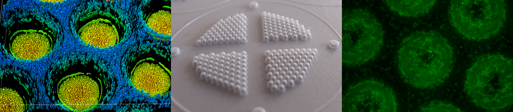

From your question
to your experiment.
From a more consistent 3D model to a new view of its microenvironment. Explore three research scenarios for CaviSphere.
Explore the applications
Build comparable
spheroid cultures.
“How can I make my 3D cultures more comparable before I run an assay?”
Defined microcavities guide cell aggregation. Establish spheroids in a consistent geometry, then use imaging, viability or functional assays to study your model.
Example research scenario: comparing responses across spheroid cultures. Cell-specific protocols and assay performance need to be established for your setup.
Explore MicroSphere ↗
Study exchange
between cells.
“How do cells interact across a porous interface in a 3D environment?”
PoroSphere combines microcavities with porous walls. Study medium exchange, permeability or cell interactions, and integrate films into a microfluidic or Organ-on-Chip setup.
Example research scenario: a 3D co-culture with exchange across a porous interface. Flow control and any external pumps belong to the surrounding experimental setup.
Explore PoroSphere ↗Follow oxygen
around your cells.
SensoSphere adds a local oxygen readout to the microenvironment of your 3D culture.

How does oxygen consumption change during a 3D mitochondrial stress test?
CAVIGEN describes a HepG2-spheroid example on its SensoSphere page. Oxygen-sensitive microcavities allow local oxygen dynamics to be investigated alongside other readouts.
The optical setup, calibration and interpretation depend on the experiment. The source contains the original example and further technical detail.
Read the original application example ↗Discuss your oxygen experiment ↗A closer look.
A clearer readout.
From many individual cells to a 3D aggregate. With SensoSphere, the cavity itself becomes part of your optical readout.
Cells come together.
Seeded cells settle in defined microcavities and aggregate into multicellular spheroids. Each structure is a community of cells, with its own local microenvironment.
Light reveals local oxygen.
Light excites the oxygen-sensitive layer. Oxygen reduces its fluorescence through dynamic quenching. A calibrated signal relative to a reference reveals local oxygen concentration.
The sensor reads the microenvironment at the cavity surface; this illustration is not a map of oxygen inside every cell.
Explore the measurement principle ↗
Look closer
at the science.
The platform builds on research into microstructured 3D cultures and optical oxygen sensing.
O₂-sensitive microcavity arrays: A new platform for oxygen measurements in 3D cell cultures
Grün, Pfeifer, Liebsch & Gottwald
Frontiers in Bioengineering and Biotechnology
Methods, publications and practical guidance.
Explore the wider research background and technical information.
↗Let’s talk about
your next experiment.
Tell us about your cells, your setup and the question you want to answer.
Request trial inserts